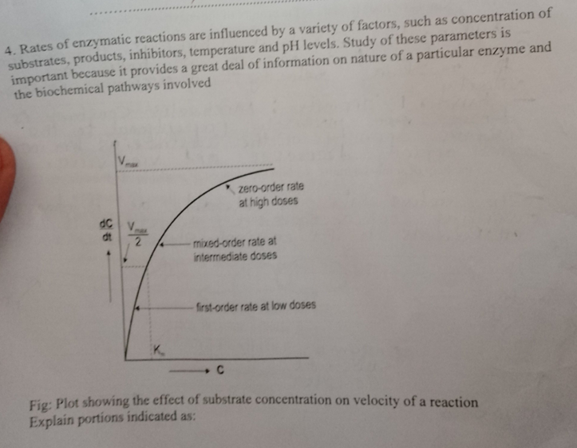

Answer: Metabolic pathways are primarily regulated through negative feedback inhibition (or end-product inhibition). In this process, the final product of the pathway acts as an allosteric inhibitor for an enzyme acting early in the pathway. When product levels are high, the pathway is "turned off"; when levels drop, the inhibition is released and the pathway turns "on" again.
Effect on Activity: Denaturation changes the three-dimensional shape of the active site, preventing the substrate from binding, which leads to a loss of biological activity.
Effect on Structures:
Return of Activity: In some cases, if the denaturation is mild and the primary structure is intact, the protein may undergo renaturation (refolding) once the denaturant is removed, restoring activity. However, in many cases (like cooked egg white), the process is irreversible.
i) Initially, the rate of product formation will increase linearly as more substrate molecules collide with active sites. However, the rate will eventually reach a maximum (Vmax) and level off. At this point, the enzyme is saturated; all active sites are occupied, and adding more substrate will not further increase the reaction rate.
ii) Adding an inhibitor will slow down the rate of enzyme action and product formation. In some cases, such as non-competitive or irreversible inhibition, it may stop the reaction entirely.
iii) Provided there is excess substrate, adding more enzyme increases the rate of reaction. The reaction rate is directly proportional to the enzyme concentration.
a) The linear sequence of amino acids in a polypeptide chain held together by covalent peptide bonds.
b) Local spatial arrangement of the polypeptide backbone, such as alpha-helices or beta-pleated sheets, stabilized by hydrogen bonds.
c) The overall three-dimensional folding of a single polypeptide chain, stabilized by hydrophobic interactions, ionic bonds, and disulfide bridges.
d) The assembly of two or more polypeptide chains (subunits) into a single functional complex.
e) Chaperones are specialized proteins that assist in the correct folding or unfolding of other macromolecules. They prevent the formation of non-functional protein aggregates.
5) 1. They rotate plane-polarized light (either to the left or right). 2. They exist as non-superimposable mirror images of each other.
6) Enzymes only speed up the rate at which equilibrium is reached by lowering activation energy; they do not alter the final ratio of reactants to products. Factors that *can* change equilibrium include changes in concentration, temperature, or pressure (Le Chatelier's Principle).
7) Methemoglobin has a high affinity for cyanide. It binds to cyanide to form cyanomethemoglobin, which prevents the cyanide from inhibiting the cytochrome oxidase in the electron transport chain, thereby acting as a scavenger.
Answer: Patients with Diabetes mellitus have chronically high levels of glucose in their plasma (hyperglycemia). Glucose binds non-enzymatically to hemoglobin in red blood cells through a process called glycation. The amount of glycosylated hemoglobin (HbA1c) is directly proportional to the average blood glucose concentration over the lifespan of the red blood cell.
Answer: The mutation causes hemoglobin molecules (HbS) to polymerize and form long rigid fibers when oxygen levels are low. This deforms the red blood cells into a "sickle" shape. These deformed cells are less flexible and block small blood vessels (capillaries), which interrupts blood flow and oxygen delivery to tissues (vaso-occlusion).
Answer: There is an inverse relationship between Km and affinity. A lower Km indicates a higher affinity of the enzyme for its substrate (meaning the enzyme can reach half-maximum velocity at a low substrate concentration). Conversely, a higher Km indicates a lower affinity.
Answer: It is classified as qualitative because the body produces a normal *amount* of hemoglobin, but the *quality* (structure) of the hemoglobin is abnormal due to a single amino acid substitution. This contrasts with quantitative disorders like thalassemia, where the hemoglobin structure is normal but the amount produced is reduced.
Answer: Certain enzymes are distributed across many different tissues in the body. If an anti-TB drug like rifampicin causes enzyme induction or tissue damage, the resulting rise in plasma enzyme levels may not clearly indicate which specific organ is affected because the enzyme is not unique to a single tissue.
15) Precursor: Tryptophan. Reactions: Hydroboxylation followed by Decarboxylation.
16) Precursor: Histidine. Reaction: Decarboxylation.
Answer: Collagen consists of three polypeptide chains (alpha chains) wound together to form a tight triple helix. This structure is achieved by a repetitive amino acid sequence where Glycine occurs at every third position (Gly-X-Y), allowing the chains to pack closely together.
a) Irreversible inhibition occurs when an inhibitor permanently inactivates an enzyme by binding to it in a way that cannot be easily reversed, often by modifying key amino acid residues at the active site.
b) Examples include Aspirin (acetylsalicylic acid) or Penicillin. These inhibitors typically form strong covalent bonds with the enzyme's active site.

i. First order: Occurs at low substrate concentrations ([S] << Km) where the reaction velocity is directly proportional to the substrate concentration.
ii. Mixed order: Occurs at intermediate doses where the rate is no longer strictly linear but has not yet reached maximum capacity; it is described by the full Michaelis-Menten equation.
iii. Zero order: Occurs at high substrate concentrations ([S] >> Km) where the enzyme is saturated. The reaction rate is constant and independent of substrate concentration.
iv. Vmax: The maximum velocity of the enzymatic reaction when the enzyme is fully saturated with substrate.
v. Km: The Michaelis constant; it is the substrate concentration at which the reaction velocity is exactly half of Vmax ($V = \frac{1}{2} V_{max}$). It reflects the affinity of the enzyme for its substrate.